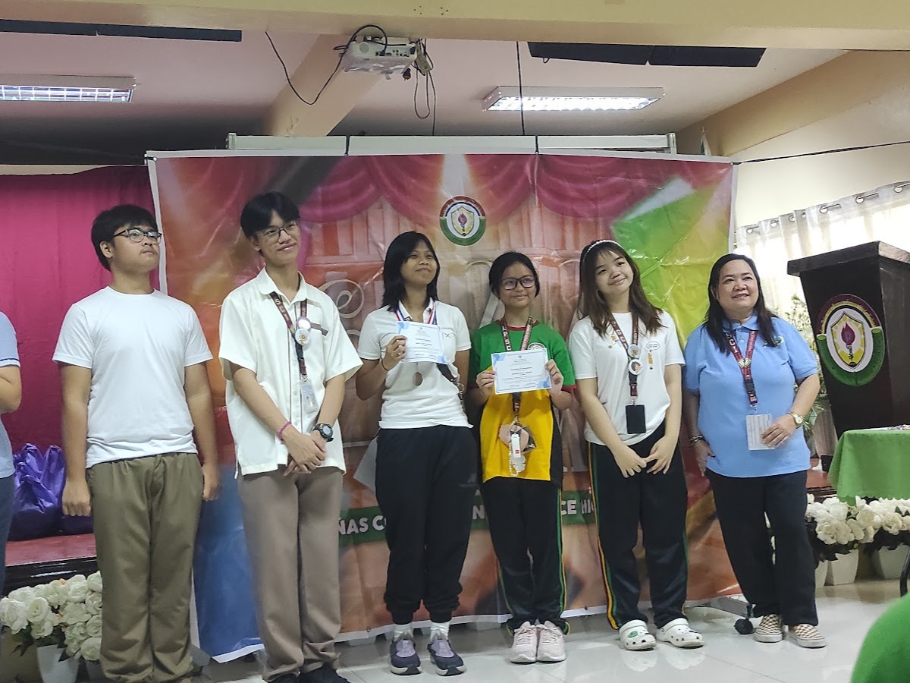
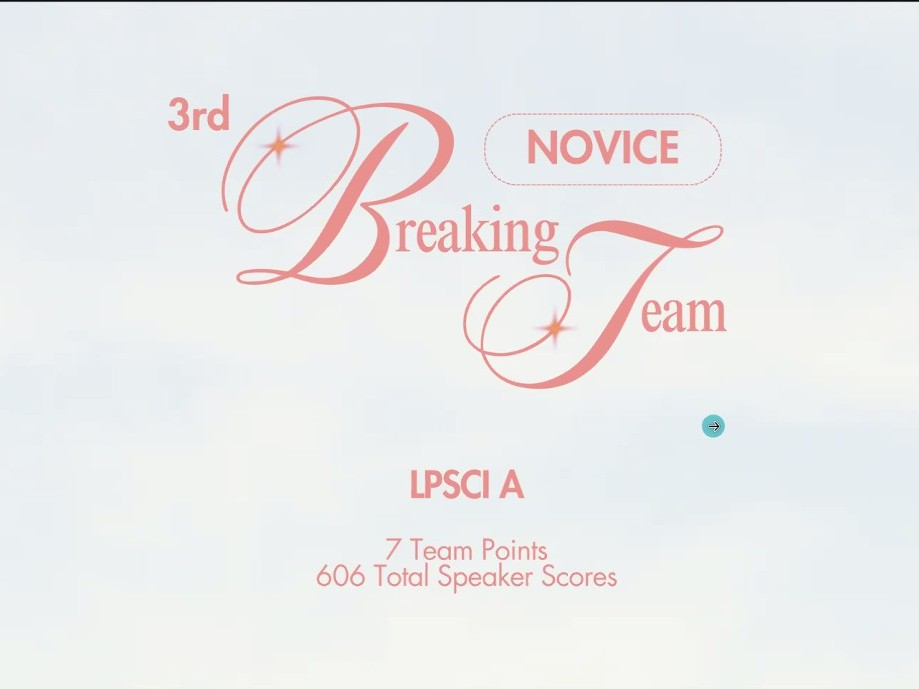
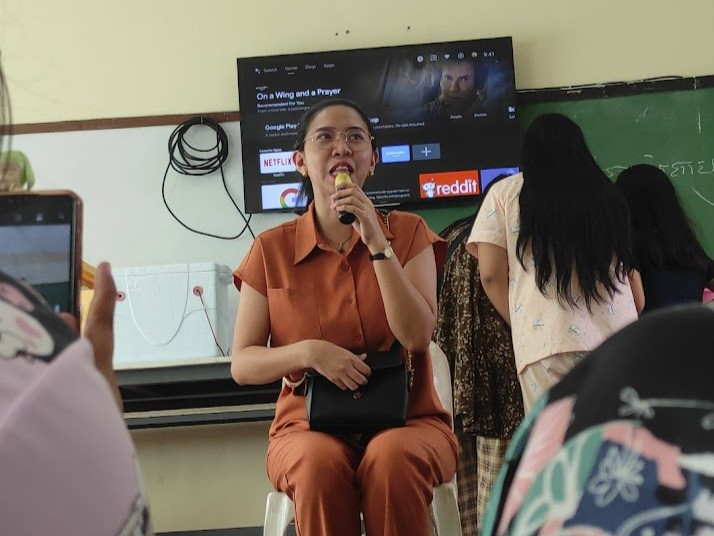
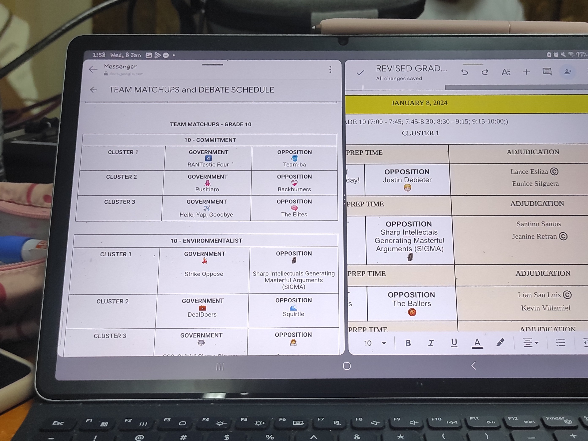
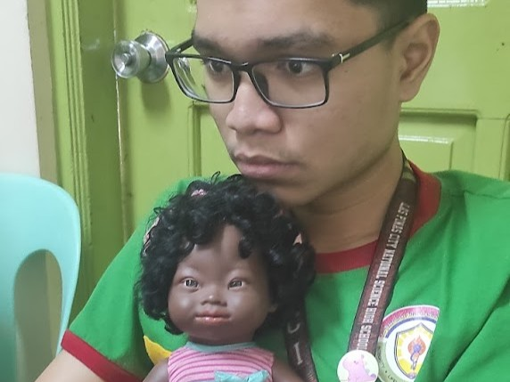
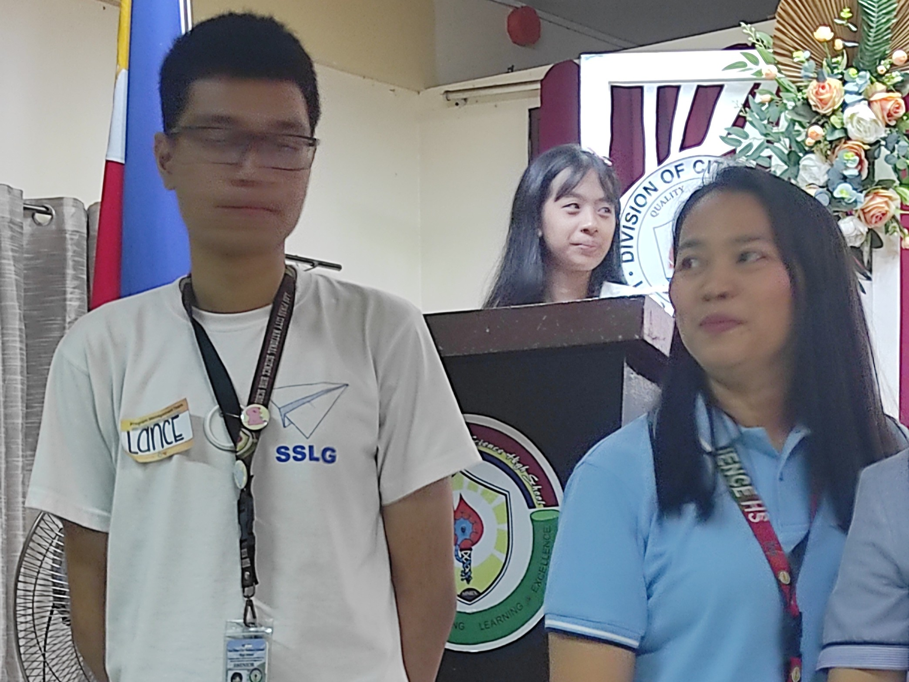

While I cannot make any promises it was a full 8 hours, I was able to sleep each day of this quarter
Did not expect this one.. English month awarding! I was second best in slogan making somehow..

Before the year ended.. after a year's worth of debating I got my first break. Honestly a shocker, still remember crying over it. LPSCI's first debate novice semifinalist awardee!!

Then the year actually ended lol. Here's our year-end party. (We had 10+ boxes of 24 Chicken)

Hey! My first event hosting. We did the Grade 9-10 English debate.. that took a lot of time and planning.. and left us with a lot of backlogs. BUT BUT BUT, VERY FUN! I am truly very thankful to Ms Gia and Ms Bianca for trusting us with the responsibility huhu.

And then, the real fun (4th Quarter) begins.
Sadly, I came into this quarter not expecting much as... well the contests I was supposed to have were cancelled as sad as it was. But, I put myself in some cool inter-school events!
Very timely after card giving, streetdance! Our class alongside Fidelity won I believe third (?)
COMEA. I am so so grateful for the experience in COMEA. Randomly being put as COMEA secretary too huhu.. I did room to room, typed out official documents.. did the voting (nagsaway sa mga grade 8s "COMMON SENSE YAN"), folded, cut and counted 400+ ballots and met some truly wonderful people. I saw the background of it all and I am grateful for this (actually) eye-opening experience. (Since we weren't allowed to show COMEA stuff this is the only photo I really have.. sorry Kuya Lance TT)

We also had ZUMBA before I forgot haha, I was excused so I ended up performing it alone at BFRV park with Jude on a suspended Friday.
And thennnnnn started my tiny seminar obsession. Scene 1: STAGE. THE BEST SEMINAR I'VE ATTENDED. PUBLIC SPEAKING, DEBATE, PRODUCTION MANAGEMENT. MS GIA AND MS GAVAN ARE MY TRUE IDOLS. AOISDAUADFUHA I loved this seminar and the people in it. I was made TWG last minute, ITS FINE, IT WAS SO FUN.
Scene 2: Leadership Seminar. I'm glad I was given the opportunity for this. I really really needed that Action Plan class. (I truly look up to Ms Ruth) Another scenario of only having a mere picture, BUT OF MY HEROES, Kuya Lance and Ms Gavan :33

And here's a video from today actually. I'm praying for our English One Act Play. 🙏